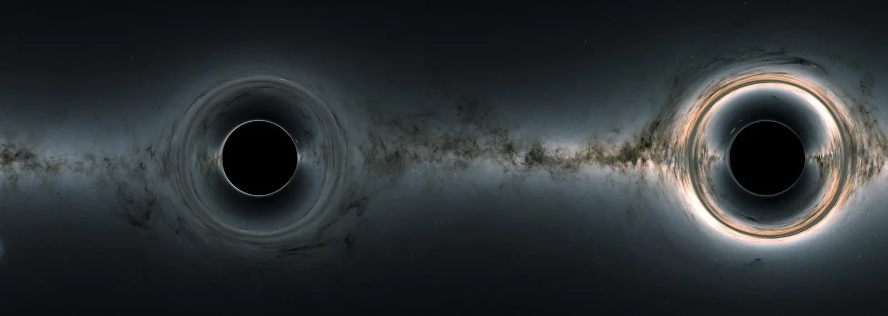
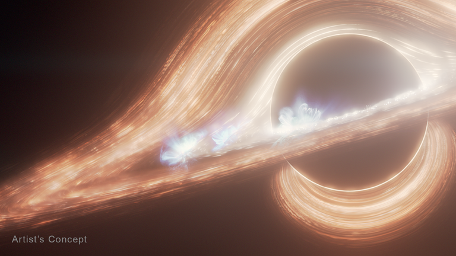

Black Holes
Black holes are among the most mysterious cosmic objects, much studied but not fully understood. These objects aren’t really holes. They’re huge concentrations of matter packed into very tiny spaces. A black hole is so dense that gravity just beneath its surface, the event horizon, is strong enough that nothing – not even light – can escape. The event horizon isn’t a surface like Earth’s or even the Sun’s. It’s a boundary that contains all the matter that makes up the black hole. There is much we don’t know about black holes, like what matter looks like inside their event horizons. However, there is a lot that scientists do know about black holes.
This artist’s concept portrays the supermassive black hole at the center of the Milky Way galaxy, known as Sagittarius A* (A-star). It’s surrounded by a swirling accretion disk of hot gas. The black hole’s gravity bends light from the far side of the disk, making it appear to wrap above and below the black hole. Several flaring hot spots that resemble solar flares, but on a more energetic scale, are seen in the disk. NASA’s James Webb Space Telescope has detected both bright flares and fainter flickers coming from Sagittarius A*. The flickers are so rapid they must originate very close to the black hole. Illustration: NASA, ESA, CSA, Ralf Crawford (STScI)
Finding Black Holes
Black holes don’t emit or reflect light, making them effectively invisible to telescopes. Scientists primarily detect and study them based on how they affect their surroundings: Black holes can be surrounded by rings of gas and dust, called accretion disks, that emit light across many wavelengths, including X-rays. A supermassive black hole’s intense gravity can cause stars to orbit around it in a particular way. Astronomers tracked the orbits of several stars near the center of the Milky Way to prove it houses a supermassive black hole, a discovery that won the 2020 Nobel Prize. When very massive objects accelerate through space, they create ripples in the fabric of space-time called gravitational waves. Scientists can detect some of these by the ripples’ effect on detectors. Massive objects like black holes can bend and distort light from more distant objects. This effect, called gravitational lensing, can be used to find isolated black holes that are otherwise invisible.
Black Holes Are Not ...
Wormholes. They don’t provide shortcuts between different points in space, or portals to other dimensions or universes. Cosmic vacuum cleaners. Black holes don’t suck in other matter. From far enough away, their gravitational effects are just like those of other objects of the same mass.